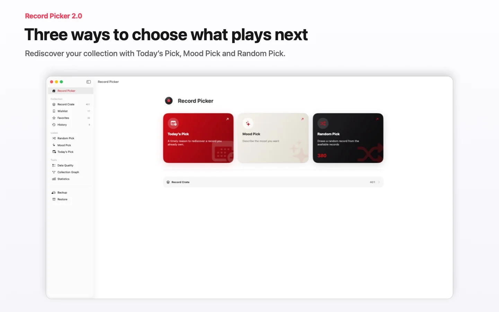

Tilpassbart tilfeldig valg
Velg mellom et helt tilfeldig valg eller en valgfri vekting av mindre spilte plater, og bruk deretter filtre og utelukkelser.
Sett på den rette platen.
Katalogiser vinylplatene og CD-ene dine, og velg neste plate med et tilpassbart tilfeldig valg, Mood Pick eller Dagens plate. Samlingen forblir privat, kan synkroniseres via iCloud mellom iPhone, iPad og Mac og er også tilgjengelig på Apple Watch.

#RecordPickerChallenge · 70 Pro-koder · 14 dager · starter 9. august
Delta i 3 Picks Challenge fra 9. til 22. august 2026 med din egen platesamling.
Kjøp, App Store-vurdering eller anmeldelse er ikke påkrevd. Vilkår for deltakelse og utvelgelse publiseres på Instagram.
Tilgjengelig nå
Record Picker 2.0 er vår største oppdatering hittil: en ny opplevelse bygget rundt tre måter å velge hva du skal høre på — Dagens plate, Mood Pick og Random Pick.
Samlingen og ønskelisten forblir private: matching og tilpasning skjer på enheten.
Record Picker
Record Picker katalogiserer vinyl, CD-er og favorittalbum og foreslår deretter neste plate basert på filtre, favoritter, utelukkelser og stemning.
 Sees The Light (2012)La Sera
Sees The Light (2012)La SeraVelg mellom et helt tilfeldig valg eller en valgfri vekting av mindre spilte plater, og bruk deretter filtre og utelukkelser.
Strekkode, MusicBrainz, Discogs, egne omslag, dubletter, utelukkelser og historikk er enkle å styre.
iPhone-trekk i liggende visning
Ønskeliste atskilt fra kassen
Record Picker har ingen brukerkonto, ingen reklame, intet datasalg og ingen Record Picker-server som lagrer samlingen.
Skjermbilder
Record Picker 2.0 gjør samlingens tilstand forebyggende og handlingsrettet.


Vinylguider
Tre fokuserte guider svarer på vanlige samlerspørsmål: hva du skal spille nå, hvordan bruke en nyttig tilfeldig velger og hvordan holde en samling levende.
Vinylguide
En praktisk guide til å velge hvilken vinylplate du skal spille neste gang uten å stirre for lenge på hyllen.
Tilfeldig velger
Hvorfor en tilfeldig vinylvelger fungerer best når den respekterer filtre, favoritter, utelukkelser og lyttekontekst.
Vinylsamling
En praktisk guide til å katalogisere, berike, sikkerhetskopiere og gjenoppdage en vinylsamling med Record Picker.
For spørsmål om appen, import, sikkerhetskopier eller personvern kan du bruke den offentlige supportkontakten.